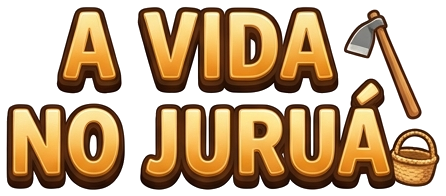
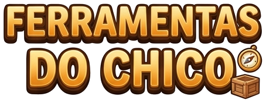

Capina a terra roxa e abre cada um dos 60 canteiros do Sítio.

A Vida no Juruá
Da terra roxa da roça às águas do Rio Juruá e às ruas de Cruzeiro do Sul: descubra o que você faz no jogo.
Teclas [1] Enxada · [2] Regador · [E] Plantar
Ciclo Agrícola Completo
Plantio Vivo nos 60 Canteiros do Sítio
Prepare a terra roxa com a enxada, semeie mandioca brava, macaxeira e milho crioulo e acompanhe os 4 estágios reais de crescimento até a colheita.
Passo 1
Capinar & Adubar
Use a Enxada [1] e a Pá para limpar e abrir os canteiros.
Passo 2
Semear & Regar
Plante sementes do Sr. Celso [E] e mantenha a umidade com o Regador [2].
Passo 3
Colher Safra Cheia
Recolha raízes maduras para a Casa de Farinha ou venda direta.
A Turma do Sítio
Escolha um morador do Juruá para girar em 360°, testar animações e ouvir histórias da roça e da cidade.
Arraste para girar 360°
Chico Gatão
Protagonista · Agricultor Caboclo
Fala do Personagem
“Eu sou Chico Gatão, filho desse rincão. Pegue sua coragem, segure o timão. Bem-vindo ao Juruá!”
Animações & Movimento 3D

Ferramentas do Chico
Cada ferramenta de trabalho carrega sua própria raridade e brilho — filtre por classe, ajuste a luz e gire em 360°.
Revolve o solo adubado e abre covas fundas para mudas.
Mantém a umidade diária da mandioca, macaxeira e milho.
Corta lenha firme para alimentar o forno de barro da farinhada.
Quebra pedras brutas e desobstrui trilhas nos barrancos.
Repara cercas, prensa de tipiti, cocho e tábuas do trapiche.
Captura iscas vivas e peixes de igarapé nas margens rasas.
Clareia a mata, o trapiche e a roça nas noites escuras do Acre.
Vara artesanal de mestre para fisgar Tambaqui e Pirarucu no rio.
Cruzeiro do Sul
Do amanhecer na horta à praça iluminada de Natal: clique em qualquer cena para ampliar.
Edição Especial de Natal
Cruzeiro do Sul · --:--
Feito no Acre, Vivo no Juruá
Toque em qualquer destaque abaixo para testar ao vivo:
“
Chico, bem-vindo a Cruzeiro do Sul! Entre as barrancas do Juruá, o perfume da farinha no forno e o coreto iluminado, cada pedaço dessa terra ganha vida em 3D.
★★★★★
Orca Game Studio & Junior Play · Vale do Juruá, Acre